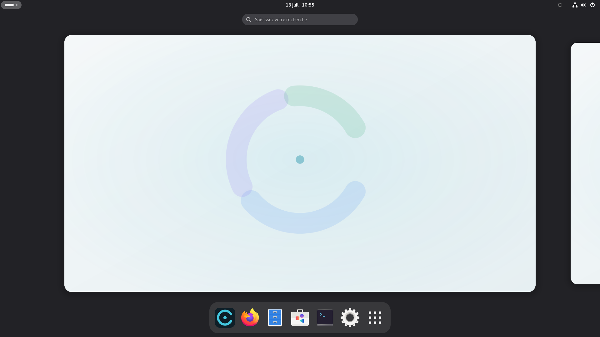
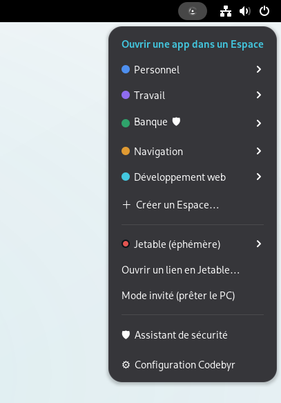
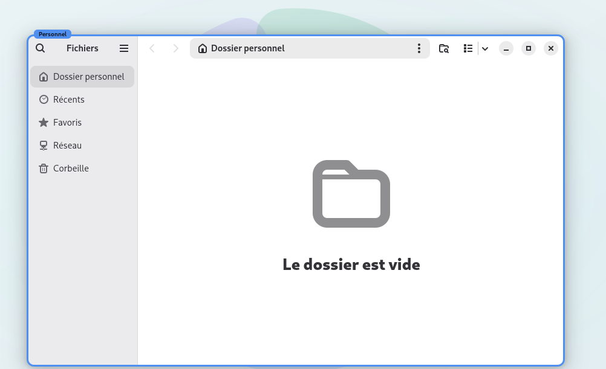
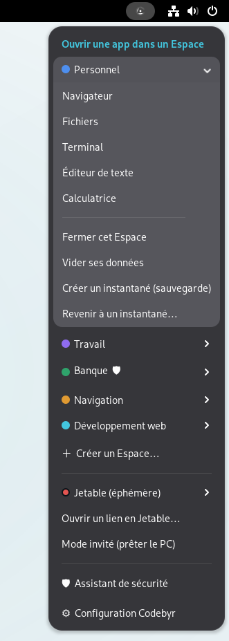
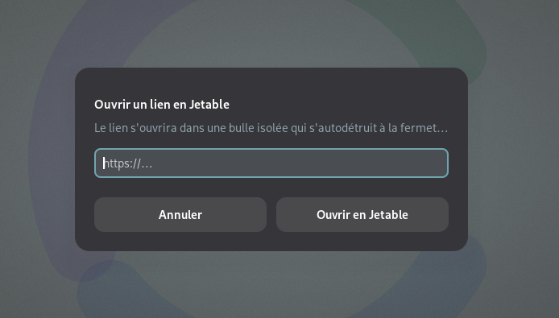
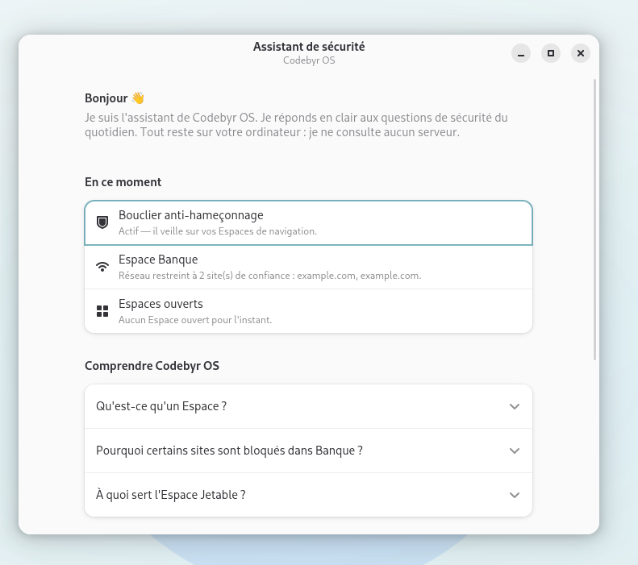
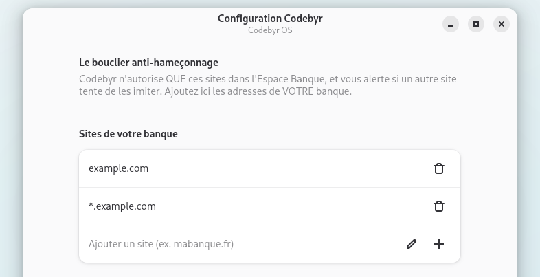
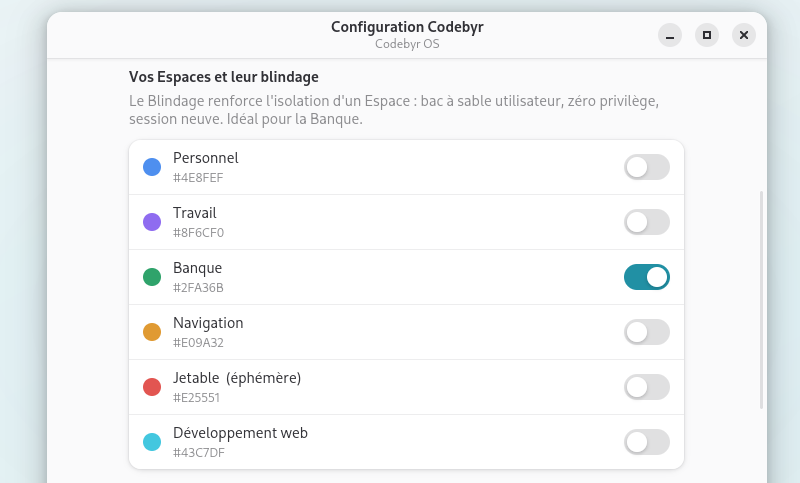
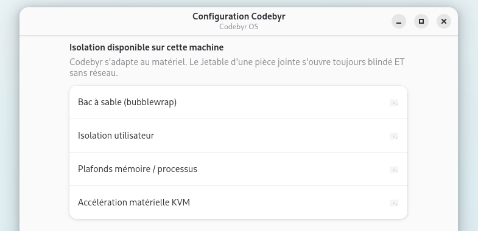

Personnel
Votre vie quotidienne, vos fichiers personnels.
Distribution Linux · basée Debian · GPL-3.0
Codebyr OS enferme chaque piège — fichier vérolé, site frauduleux, téléchargement douteux — dans un compartiment isolé. Sécurisé par conception. Simple par conviction.
État du projet — ISO live installable et testée sur machine réelle

Là où Qubes parle de « qubes », de « domaines » et de « VM templates », Codebyr parle d'Espaces : des compartiments isolés, avec un nom humain et une couleur propre. Chaque fenêtre porte un liseré à la couleur de son Espace. L'utilisateur n'a jamais besoin de savoir ce qu'est un conteneur — la couleur dit tout.


Votre vie quotidienne, vos fichiers personnels.
Documents et outils professionnels, à part.
Uniquement vos sites financiers. Rien d'autre n'y entre.
Le web ordinaire, isolé du reste de votre vie.
Éphémère — s'autodétruit à la fermeture.
Créez vos propres Espaces persistants (nom + couleur) en deux clics.
Pas une promesse : du code livré, dans une ISO qu'on installe. Voici la protection réelle qui tourne déjà sur une machine ordinaire.
Bac à sable bubblewrap, dossier personnel séparé, bus D-Bus privé, liserés colorés par fenêtre via une extension GNOME Shell dédiée.
Isolation renforcée : espace de noms utilisateur, zéro privilège (--cap-drop ALL), session neuve, plafonds mémoire/processus anti fork-bomb. Actif par défaut sur Banque.
Un lien ou une pièce jointe douteuse s'ouvre dans une bulle blindée et sans réseau qui s'autodétruit. Clic droit → « Ouvrir en Jetable ».
L'Espace Banque n'autorise QUE vos domaines bancaires (filtre réseau à liste blanche). Ailleurs, une extension alerte si un site imite l'un de vos sites protégés.
Politique réseau propre à chaque Espace : libre, liste blanche, ou coupure totale.
Instantanés d'un Espace (export / import), restauration en un clic depuis le menu du Sceau.
Exportez un Espace complet, réimportez-le sur une autre machine. Vos compartiments vous suivent.
Session vierge, nettoyée automatiquement à la déconnexion. Prêtez votre machine sans arrière-pensée.
Des réponses claires, en français, aux questions de sécurité du quotidien. 100 % local — aucune donnée n'en sort.
Et aussi : installeur graphique Calamares (chiffrement LUKS optionnel),
~150 locales & polices Noto, clavier AZERTY par défaut, tour de bienvenue au premier démarrage,
et un rapport honnête des capacités de votre machine : codebyr-space isolation.






La sécurité qui ment est pire que l'absence de sécurité. Voici, sans détour, ce que Codebyr protège — et ce qu'il ne prétend pas encore protéger.
Ce n'est pas Qubes, et Codebyr ne le prétendra jamais. Mais c'est une
protection réelle, qui réduit drastiquement les dégâts d'un piège — sur une machine
que tout le monde possède déjà. La détection des capacités est transparente :
codebyr-space isolation vous dit exactement ce que votre machine sait faire.
Le palier supérieur — l'isolation matérielle par micro-VM (KVM) — est le prochain jalon
de la feuille de route.
Qubes exige la machine. Codebyr s'adapte à elle : le même système offre le meilleur niveau d'isolation que votre matériel permet.
| Qubes OS | Codebyr OS | |
|---|---|---|
| Mémoire requise | 16 Go et plus | 4 Go (8 Go conseillés) |
| Matériel | Liste de compatibilité stricte | Un laptop ordinaire, même de 2015 |
| Expertise | Notion de VM, domaines, templates | Une couleur par Espace, rien à configurer |
| Langue | Anglais d'abord | Français d'abord (~150 locales) |
| Isolation | Machines virtuelles matérielles (Xen) | Espaces de noms noyau · micro-VM à venir |
| Prix | Gratuit, open source | Gratuit, open source (GPL-3.0) |
Codebyr redonne vie à un portable modeste là où Qubes exige du matériel haut de gamme. La même idée fondatrice — compartimenter — rendue accessible.
Où en est le projet, sans enjoliver : quatre phases livrées, deux à venir.
Branding complet, charte graphique, architecture.
Debian trixie + GNOME, durcie, débrandée, AZERTY.
Isolation bubblewrap, liserés colorés, menu du Sceau.
Jetable, Bouclier, Réseau par Espace, Portable, Retour dans le temps, Assistant, Mode invité, Blindage.
Calamares Codebyr, installation vérifiée sur machine réelle.
ISO signées, CI de build, site, premiers testeurs.
Isolation matérielle KVM pour les Espaces sensibles — le palier au-dessus de bubblewrap.
Codebyr fait tourner plusieurs Espaces isolés à la fois : la RAM est le facteur le plus important.
| Minimum | Recommandé | |
|---|---|---|
| Processeur | x86-64, 2 cœurs | 4 cœurs récents |
| Mémoire (RAM) | 4 Go — 1 à 2 Espaces | 8 Go — plusieurs Espaces |
| Disque | 20 Go libres | 30 Go+, SSD conseillé |
| Graphique | Intel / AMD / NVIDIA OpenGL (~2012) | idem |
| Démarrage | UEFI ou BIOS | UEFI |
Écrivez l'ISO sur une clé USB, démarrez dessus : session live immédiate, aucune installation forcée. Essayez avant d'installer.
Gratuit & open source · GPL-3.0 · basé sur Debian & Calamares